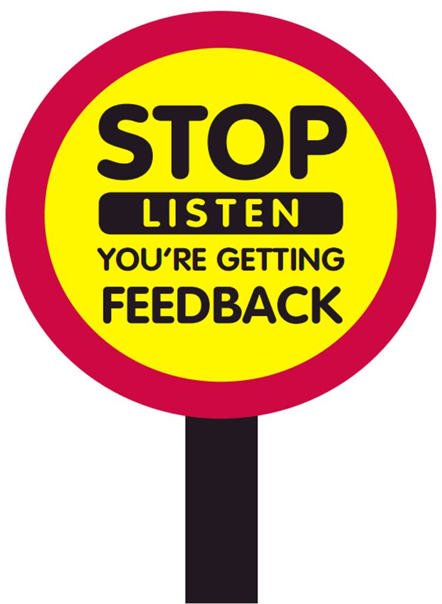

Let me start off by saying that I was very skeptical about the idea of peer-pairing and how it might benefit my learning process from the very first minute I found out about it. I guess this just mostly has to do with the experience I gained from attending other educational institutions previously. Whenever there was some kind of group project or activity, I would always be discouraged and tried to find any way I could to get the assignment done all by myself, avoiding collaboration with others members of my group as much as possible. Somehow, I always found that whenever there was more than one person involved, it always lead to time wasting and very little could be accomplished until I actually sat down in isolation and did whatever I had to do.
However, so far my DBC peer-pairing experience here in Phase 0 has been completely different from what I just talked about! My expectations and illusions were quickly dismissed after I participated in my first few sessions. Despite the fact that I was nervous, thinking that I'm behind everyone else and know so little about what we're learning and how I am going to be slowing my future partners down, I soon discovered that I'm actually not alone in that regard. I can now safely assume that probably about 90% of DBC boots felt the same way I did. When I was able to share my thoughts, questions and fears with fellow students, it took a huge load off my shoulders and peer-pairing actually became... fun!
As far as the technical aspect of peer-pairing goes, I can definitely say that a lot of times I was able to pick up some very valuable concepts from my partners and they have been able to help me out with some of the bumps that I would run into when trying to compelete the challenges. On the other hand, I realize that I was also able to help my partners as they sometimes explicitly told me that and thanked me. Knowing that was very satisfying to me!
Of course, not everything went smooth all the time. Occasionally, it was difficult to find the right chemistry with my partner and that could be due to a wide variety of reasons, like different personalities, different level of technical knowledge, difference in how we prefer to approach an assignment, communication issues, etc. Still, we were able to overcome all of the things mentioned above most of the time and if I was given the choice to avoid peer-pairing at this point, I wouldn't accept it, because now I'm starting to see that when it comes to programming, the benefits of peer-pairing outweight the harm.
The feedback is a whole different thing altogether. Since giving written feedback is a mandatory task for all of us, I sometimes found it hard to come up with the right choice of words for my partner, because it felt like I was talking behind his/her back. I would much rather express what I think about our experience during the actual session but then again, I know that some people may be shy about doing this, so that's why written feedback is also important. To be honest, I can't really say that I received too much valuable feedback in technical sense so far that I could implement into my learning style. On the other hand, I was given some clues regarding my communication style that I definitely took note of. Thus, I will try to adjust my approach to the discussion process in the future. Overall, the vast majority of the feedback that I got is very positive, which is great news! I love how kind and considrate all of my fellow boots are!
